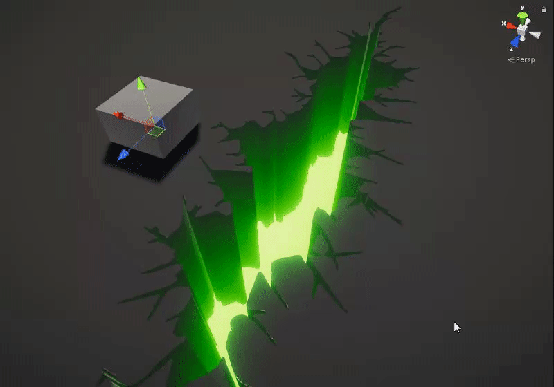
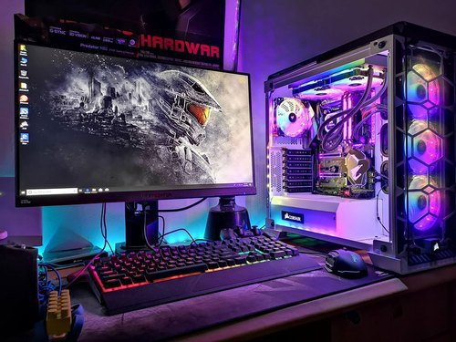

Los efectos visuales y sonoros son elementos fundamentales en la creación de una experiencia inmersiva en los videojuegos. En la programación de videojuegos, estos efectos se implementan a través de diferentes técnicas y herramientas. Aquí te presento algunas de las formas más comunes de implementar efectos visuales y sonoros en los videojuegos:
Efectos Visuales:
- Gráficos 2D y 3D: Para implementar efectos visuales en los videojuegos, se utilizan motores gráficos como Unity, Unreal Engine o Godot, que permiten crear escenarios tridimensionales, animaciones, efectos de partículas, iluminación dinámica, entre otros.

- Shader Programming: Los desarrolladores pueden utilizar lenguajes como HLSL (High-Level Shader Language) o GLSL (OpenGL Shading Language) para programar shaders personalizados que generen efectos visuales avanzados como reflejos, sombras, efectos de distorsión, entre otros.
- Animaciones: Se pueden implementar animaciones mediante el uso de herramientas de animación como Spine, DragonBones o Adobe Animate, y luego integrarlas en el juego a través de la programación.

- Efectos de partículas: Los efectos de partículas como fuego, humo, chispas, explosiones, etc., se pueden implementar mediante sistemas de partículas disponibles en los motores gráficos o creando sistemas personalizados.
Efectos Sonoros:
- Librerías de Audio: Se pueden utilizar librerías de audio como FMOD o Wwise para gestionar los efectos sonoros y la música en los videojuegos de forma dinámica.
- Programación de Audio: Los desarrolladores pueden programar efectos sonoros directamente en el código del juego utilizando APIs de audio como OpenAL o SDL Mixer.
- Implementación de Música: La música se puede integrar en el juego a través de archivos de audio en formatos como MP3, WAV o MIDI, y reproducirlos en momentos clave del juego para generar ambiente y emoción.
En resumen, la implementación de efectos visuales y sonoros en la programación de videojuegos requiere el uso de herramientas especializadas, técnicas de programación específicas y un enfoque creativo para lograr una experiencia inmersiva y envolvente para los jugadores.
3. Interacción con el Jugador:
- Feedback Visual y Sonoro: Es importante proporcionar al jugador retroalimentación visual y sonora para indicar acciones realizadas, eventos importantes o cambios en el entorno del juego. Por ejemplo, al recoger un objeto, realizar una acción especial o recibir daño, se pueden reproducir efectos visuales y sonoros específicos para comunicar la información de manera clara al jugador.
- Efectos de Iluminación: La iluminación en los videojuegos puede utilizarse para crear atmósferas, resaltar elementos importantes o generar efectos dramáticos. Se pueden implementar efectos de iluminación dinámica, sombras en tiempo real, efectos de luz volumétrica, entre otros.
4. Optimización y Rendimiento:
- Es importante optimizar los efectos visuales y sonoros para garantizar un rendimiento óptimo del juego. Esto incluye utilizar técnicas como el culling de objetos que no están en pantalla, la reducción de la complejidad de los efectos visuales en momentos intensos y la gestión eficiente de los recursos de audio para evitar sobrecargas en la memoria.

5. Innovación y Creatividad:
- La implementación de efectos visuales y sonoros en los videojuegos es una oportunidad para ser creativo e innovador. Los desarrolladores pueden experimentar con nuevos efectos, combinar diferentes técnicas y buscar formas originales de sorprender a los jugadores y sumergirlos en la experiencia del juego.
En conclusión, la implementación de efectos visuales y sonoros en los videojuegos es un proceso multidisciplinario que combina arte, programación y diseño para crear experiencias inmersivas y emocionantes. Con las herramientas adecuadas y un enfoque creativo, los desarrolladores pueden dar vida a mundos virtuales llenos de color, sonido y emoción.